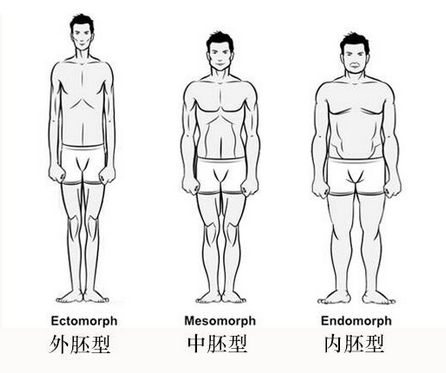
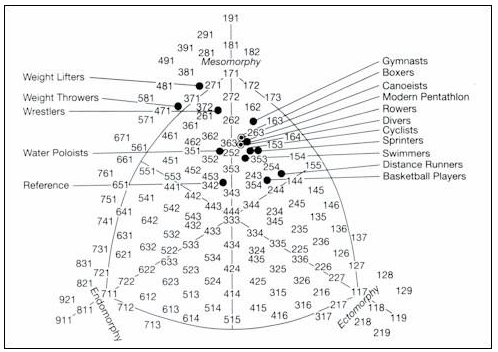

这个问题下很多人都回答得不够系统，因此福临想系统的说说自己这些年来带的一些瘦人学员成功增肌的经验，希望能够改善更多“易瘦体质”的人身材和运动表现。
首先我想说的是，瘦人想要增肌，需要的是一系列的改变，包括饮食、睡眠、训练等，所以福临会从体型、饮食、训练和睡眠这 4 个方面来说：
文章目录：
1.首先你得清楚自己的身体类型
2.合理的饮食搭配
3.恰当的训练计划
4.充足的睡眠质量
1.首先你得清楚自己的身体类型：
开始健身前，你需要了解你的身体类型是属于哪一类，这样才能够针对性的做出适合自己的健身计划。
我们可以把人体分为三种类型：内胚型、中胚型、外胚型
外胚型的特点是：
1.四肢长、躯干也长；
2.一般骨骼较小，双肩下垂，脂肪和肌肉都很小；
3.由于新陈代谢偏高，因此很难长肌肉
题主提的是《很瘦的人该制定怎样的健身计划？》，那么福临就假设题主是偏外胚型的人。下面也会按照偏外胚型的人来提建议。
支持iOS和Android